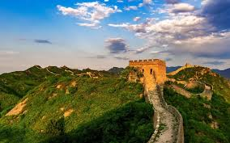
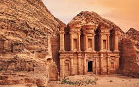
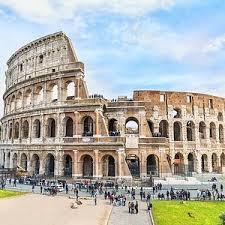
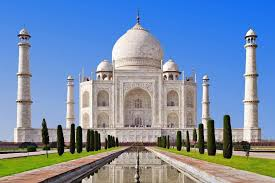

Great Wall of China
The Great Wall of China is an ancient series of walls and fortifications located in northern China, built around 500 years ago. It stretches over 13,000 miles and was constructed to protect Chinese states and empires from various nomadic groups of the Eurasian Steppe.
Petra
Petra, originally known to its inhabitants as Raqmu, is a historical and archaeological city in southern Jordan. The city is famous for its rock-cut architecture and water conduit system.
Christ the Redeemer

Christ the Redeemer is an iconic statue of Jesus Christ in Rio de Janeiro, Brazil. The statue stands 98 feet tall and its horizontally outstretched arms span 92 feet.
Machu Picchu

Machu Picchu is a 15th-century Inca citadel located in the Eastern Cordillera of southern Peru on a mountain ridge 7,970 feet above sea level.
Chichen Itza

Chichen Itza was a large pre-Columbian city built by the Maya people of the Terminal Classic period. The archaeological site is located in Yucatán State, Mexico.
Roman Colosseum
The Colosseum, also known as the Flavian Amphitheatre, is an ancient amphitheater in the center of Rome, Italy. It is the largest ancient amphitheater ever built and remains the largest standing amphitheater in the world today, despite its age.
Taj Mahal
The Taj Mahal is an ivory-white marble mausoleum on the south bank of the Yamuna river in the Indian city of Agra. It was commissioned in 1632 by the Mughal emperor Shah Jahan to house the tomb of his favorite wife, Mumtaz Mahal.